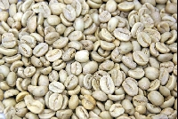

バリ島、バツール山の山腹(1100～1500m)のコーヒー農園で、高原の柔らかな陽光を浴びて栽培され、ナチュラル製法で果実のまま天日で乾燥します。果実の香りと酸味が見事に調和し、コクを持った優れたコーヒーです。
コーヒーのはじめて
豆を煎って、その抽出液を飲むという今と同じコーヒーが飲まれるようになったのは15世紀の後半、イスラムの僧侶たちが飲み始めたのが最初だといわれています。（諸説があります） 長い時間、祈りをささげる僧侶たちに眠気覚ましとして、活力を生み出す飲み物として愛飲されていたそうです。 コーヒーは古くから、その薬効が注目され最近では科学的なデータでも 様々な効力が証明されているとても健康的な飲み物です。
コーヒーについて
コーヒーの木はアカネ科の常緑樹で成木になると3ｍから5ｍほどになります。 主に熱帯地方で生育しますので、日本での栽培は難しいといわれています。 雨季と乾季があるところが理想で、高地で最も成長するため、コーヒーの名産地には高地が多いのです。コーヒーチェリーと呼ばれる果実がなり、コーヒー豆となるのはこの果実の種子の部分です。 この種子を果実から取り出し、生豆として各産地から輸出されます